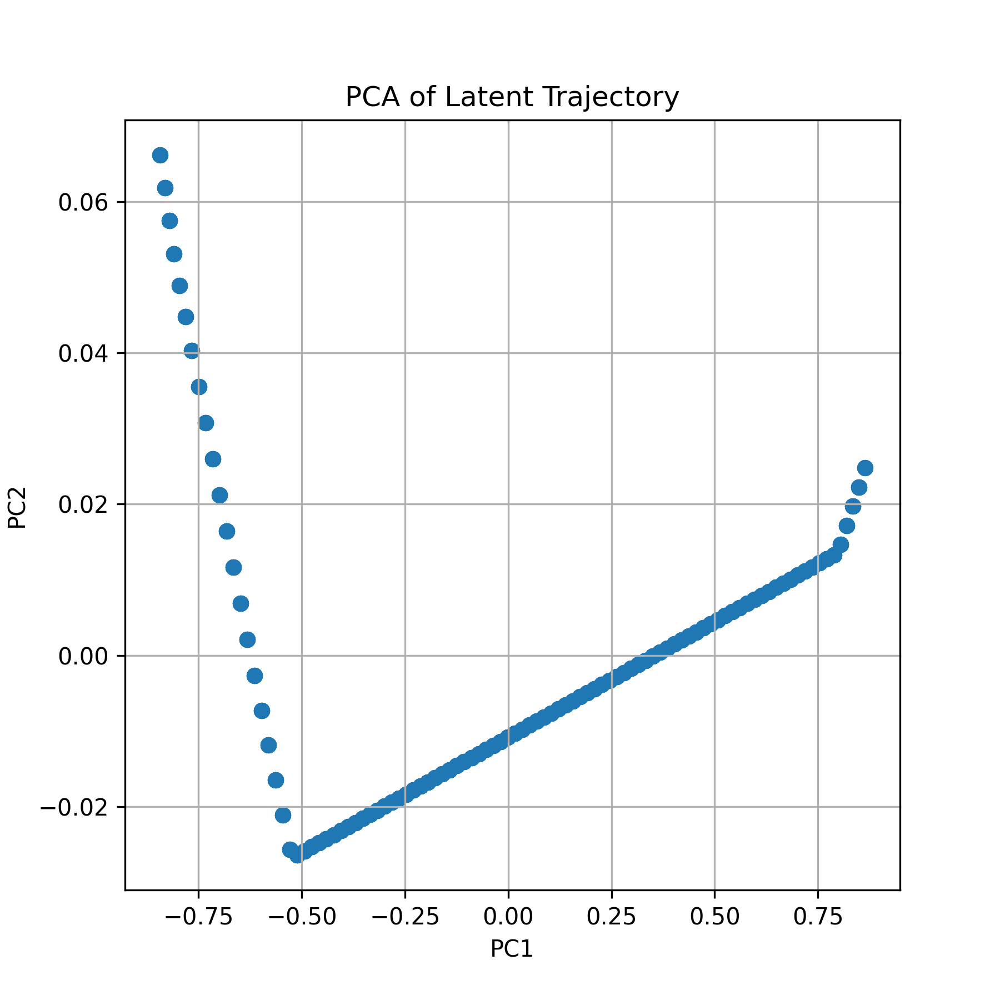
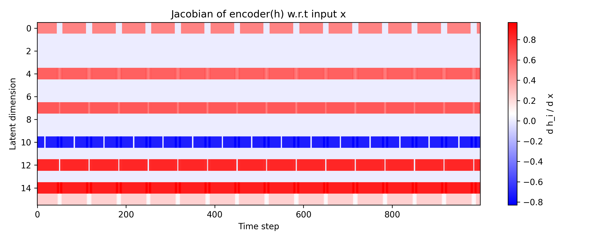
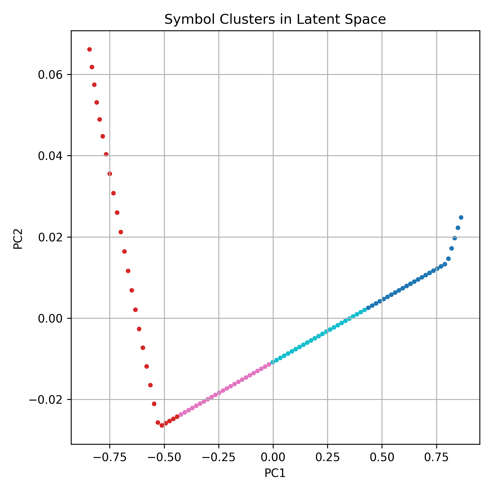
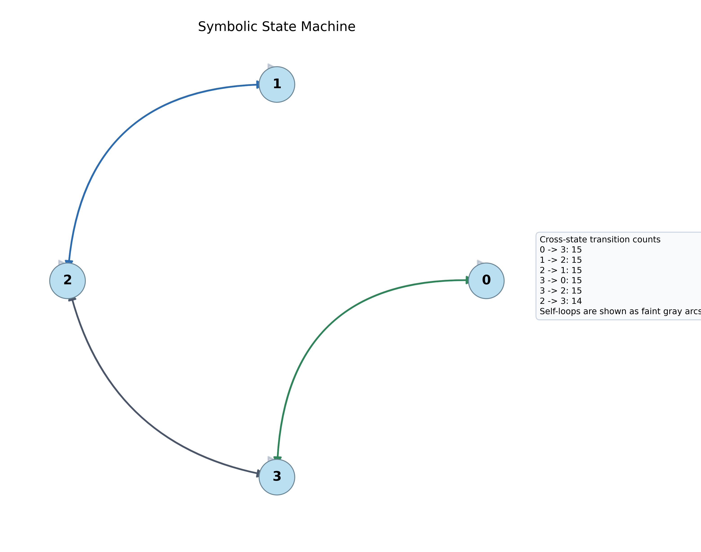
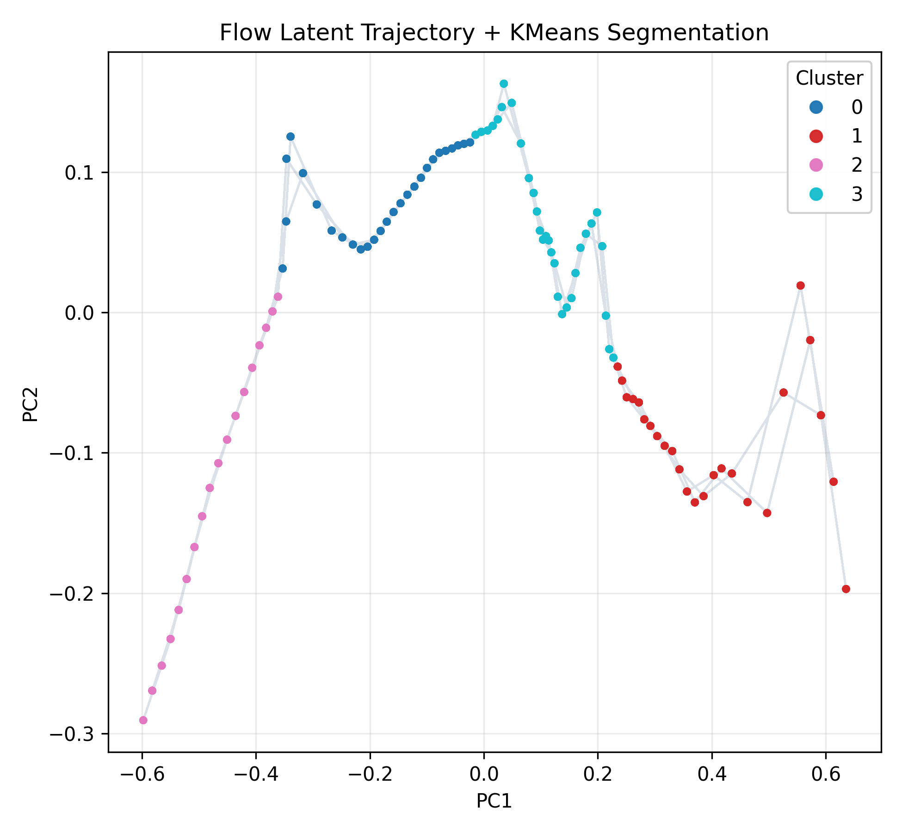
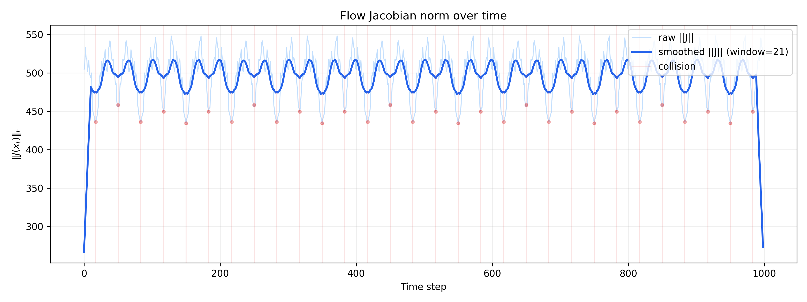
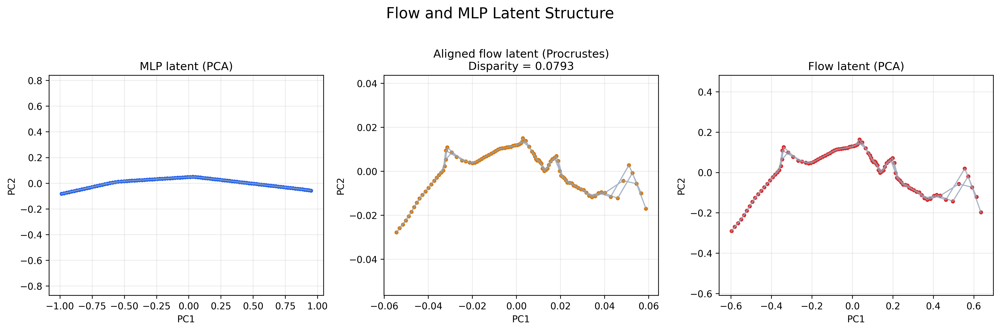
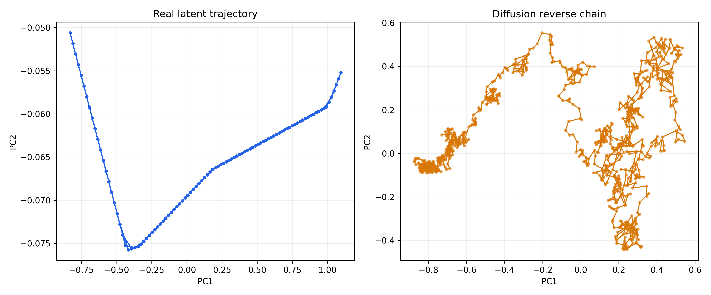
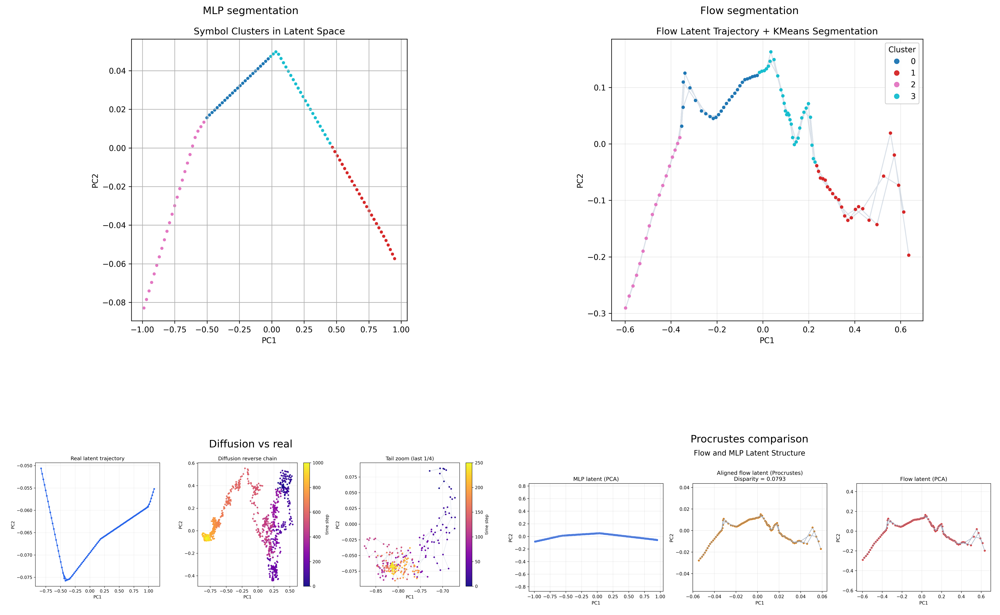

A preprint based on this repository is currently in preparation.
This work studies how symbolic structure emerges from world dynamics, with potential applications to game worlds, NPC behavior, and structured environments.
Symbol Emergence from Predictive Dynamics in a 1D World Model
A mechanistic study of how discrete symbolic structure arises from continuous latent dynamics
Abstract
Understanding how discrete symbolic structure can arise from continuous sensorimotor experience remains a central challenge in cognitive science and machine learning. Using a minimal one-dimensional bouncing-ball environment, we show that a predictive world model develops a latent trajectory that lies on a smooth manifold segmented by sharp transitions. These transitions align with changes in predictive regimes, and discontinuities in the encoder Jacobian provide a mechanistic marker of these boundaries.
Combining latent-geometry analysis, Jacobian inspection, and clustering, we extract symbolic states whose transitions form a compact state-transition graph summarizing the environment's dynamics. Crucially, similar segmentation-like patterns and large-scale geometric trends appear across multi-layer perceptrons (MLPs) and invertible flow models; flows preserve boundaries through topology-preserving transformations. Diffusion models reproduce comparable large-scale geometric bends via geometry-guided denoising, though their reverse chains are stochastic and yield more dispersed trajectories. This cross-model consistency—qualified by stochastic differences—indicates that symbolic boundaries are primarily driven by the environment's predictive structure rather than architecture-specific inductive biases.
This minimal setting exposes a core mechanism by which symbolic categories can emerge from prediction alone. For reproducibility, code and configuration files are available in symbol-emergence-1d/model/, and the Appendix summarizes the repository-consistent settings used in the paper (seed=42; default latent_dim=16; N=999 latent states in the released figures; KMeans k=4 where not otherwise specified).
1. Introduction
Understanding how discrete symbolic structure can emerge from continuous sensorimotor experience is a central question in cognitive science and machine learning. Predictive world models provide a minimal setting in which such structure may arise: to forecast future states, the model must compress continuous dynamics into an internal representation that supports accurate prediction. This raises a fundamental question: what structure does a predictive model impose on its latent space, and how does this structure relate to the environment's dynamics?
To investigate this question, we analyze the latent representations of a world model trained on a simple one-dimensional bouncing-ball environment. This environment offers a controlled testbed in which continuous motion is punctuated by discrete events, allowing us to isolate how predictive models respond to changes in dynamical regimes. Despite its simplicity, the setting captures the essential challenge of symbol emergence: continuous trajectories must be organized into discrete, behaviorally meaningful units.
Our approach combines geometric, differential, and clustering-based analyses. PCA reveals the global organization of the latent trajectory, while the encoder Jacobian exposes local changes in sensitivity that provide a differential signature of regime transitions. Clustering the latent states further reveals discrete segments that correspond to qualitatively distinct phases of the environment's dynamics. The repository-consistent experimental settings are default latent_dim=16, KMeans k=4, and analysis sample size N=999 latent states in the released figures (see Appendix for the implementation details).
Across multiple architectures - including multi-layer perceptrons (MLPs), invertible flow models, and diffusion models - we observe a consistent pattern: the latent trajectory forms a smooth manifold segmented by sharp transitions aligned with event boundaries. These segments can be interpreted as symbolic states, and their transitions form a compact state-transition graph that summarizes the predictive structure of the environment. The cross-model consistency suggests that the observed symbolic boundaries arise from the environment's predictive dynamics rather than architecture-specific inductive biases. This minimal framework allows us to examine how symbolic structure may emerge from prediction alone, without supervision or predefined categories. It also provides a mechanistic foundation for extending symbol-emergence studies to richer environments and, ultimately, to multi-agent systems in which symbolic categories may be aligned, shared, or negotiated.
Our main contribution is a mechanistic explanation of how symbolic boundaries arise from Jacobian discontinuities and predictive-regime transitions in a minimal 1D world model.
Related Work
Research on symbol emergence has examined how discrete categories can arise from continuous sensorimotor experience. Prior work has described symbol emergence as a multi-layered process involving individual representation learning, multimodal categorization, and eventually the formation of shared symbol systems within society. Other studies have explored how agents acquire internal categories through interaction and prediction, highlighting the role of predictive processing in structuring latent representations. Our work follows this general line of research but focuses on a more mechanistic question: how symbolic boundaries arise within the latent dynamics of a predictive model, even without multimodality or social interaction.
Predictive world models provide a minimal setting for studying such emergence. Earlier studies on predictive coding and learned dynamics have shown that latent spaces often reflect environmental structure, but these works typically emphasize performance or compression rather than the geometry of the latent trajectory. In contrast, we analyze how predictive regimes shape the latent manifold itself, and how discrete symbolic states may arise from transitions between these regimes.
Our approach is also related to research on representation geometry and mechanistic interpretability, which uses tools such as PCA, SVD, and Jacobian analysis to study the structure of learned representations. Prior work has examined curvature, linear regions, and activation patterns in neural networks, but has not connected these geometric features to the emergence of symbolic structure. Jacobian discontinuities provide a direct mechanistic link between predictive dynamics and symbolic segmentation.
Finally, our analysis draws on flow-based and diffusion-based generative models. Flow models provide invertible mappings that preserve structural boundaries, while diffusion models reconstruct trajectories through iterative denoising. Although these models are typically used for density estimation or generation, we show that they preserve related large-scale geometric trends: flows tend to preserve segmentation-like boundaries via invertible reparameterizations, while diffusion reverse paths reproduce comparable bends with stochastic dispersion. This supports the view that observed boundaries are primarily driven by the environment's predictive structure rather than architectural artifacts.
2. Methods
Training Procedure
The world model is trained by gradient-based optimization to minimize prediction loss.
Environment
We use a deterministic one-dimensional bouncing-ball environment in which the agent observes the ball position over time and the only discrete events are left-wall and right-wall collisions. This setting isolates how symbolic boundaries arise from predictive dynamics.
World Model
The world model combines an encoder and decoder in a low-dimensional latent space, and it is trained to reconstruct observations while forecasting the next step.
Flow Model
A RealNVP flow model is trained on the latent trajectories to probe the reversible geometry of the representation. Because the flow is invertible, it provides a direct test of whether symbolic boundaries persist under a bijective reparameterization.
Diffusion Model
A denoising diffusion model is trained on latent trajectories to study the generative dynamics. Its reverse chain is compared with the real latent trajectory to test whether the same segmentation reappears under iterative denoising.
Analysis Pipeline
We analyze latent geometry with PCA, detect local structural changes with encoder Jacobians, cluster latent states into symbolic categories, and construct the induced state-transition graph.
3. Results
3.1 Latent Geometry and Symbol Segmentation

Figure 2. PCA projection of the latent trajectory, showing a low-dimensional manifold with collision-marked breakpoints (N=999, seed=42; PCA shown on model/latent.npy).
The encoder Jacobian changes sharply at the same event locations, indicating nonuniform local sensitivity along the trajectory.

Figure 3. Encoder Jacobian over time, highlighting sharp sensitivity changes aligned with collisions (N=999, seed=42; Jacobian computed via autograd on the trained WorldModel).
Clustering the latent states produces a small number of compact groups that partition the trajectory into discrete regions of the predictive latent space.

Figure 4. Symbol segmentation in latent space, where clustering partitions the trajectory into symbolic regions (KMeans, k=4, n_init=20, random_state=0; N=999).
The resulting state-transition graph summarizes the repeated switching pattern observed along the trajectory.

Figure 5. Symbolic state-transition graph summarizing transitions among the inferred states (derived from clustered latent sequence; k=4).
3.2 Flow Model Analysis (Model Independence)
Because flows are invertible, they provide a natural test of whether the observed segmentation persists under a bijective transformation of the latent space.



Figure 6. Flow-model comparison, showing that the segmentation survives an invertible reparameterization (flow samples Procrustes-aligned to model/latent.npy; N=999; Procrustes with scaling).
3.3 Diffusion Model Analysis
Diffusion models reconstruct data through iterative denoising, so they provide a complementary test of whether the same segmentation structure reappears in the generative setting.

Figure 7. Diffusion-model comparison, showing similar geometric transitions in the sampled trajectory, although with stochastic dispersion due to the diffusion reverse process (N=999, seed=42; reverse chain is stochastic).
3.4 Summary of Model-Independent Structure
Despite their architectural differences, the MLP and flow models exhibit closely aligned segmentation patterns, while diffusion models reproduce similar large-scale geometric trends with greater dispersion. These observations suggest that the observed boundaries reflect environment-induced structure rather than model-specific inductive bias. The summary figure below combines the most informative views of this shared structure.

Figure 8. Cross-model segmentation summary, highlighting the shared segmentation pattern across models (flow samples Procrustes-aligned; clustering k=4; N=999).
4. Discussion
4.1 Predictive Latent Geometry
The PCA results suggest that the learned latent trajectory does not form an unstructured cloud, but instead lies on a low-dimensional manifold with piecewise-smooth geometry. In the one-dimensional bouncing-ball environment, the underlying dynamics are simple but not uniform: free motion, boundary approach, and post-collision motion correspond to different predictive situations. The world model must compress these situations into a representation that supports forecasting, and that compression appears to organize the latent space into connected regions with directional changes rather than a single globally smooth curve. This geometry matters because it suggests that predictive dynamics do not merely produce a compact representation; they also induce structure in that representation. In other words, the latent manifold is shaped by the requirements of prediction itself. Such a piecewise-smooth structure is a natural substrate for symbol emergence, because discrete symbolic categories can be defined as stable partitions of a continuous predictive manifold.
4.2 Mechanism of Symbolic Boundaries
The local mechanism behind these boundaries is the switching of ReLU activation patterns in the encoder. Because the encoder is piecewise linear, each change in activation pattern induces a new local linearization, which appears in the Jacobian as a jump or sharp change. In this setting, the Jacobian is not just a descriptive diagnostic; it marks transitions between predictive regimes. When the system approaches a collision, the model must switch from one prediction strategy to another, and that regime switching is reflected as a discontinuity in sensitivity to the input. This is why the Jacobian peaks are aligned with event boundaries in the trajectory. At the mechanistic level, a predictive regime is therefore not just a mode of behavior in the environment, but a mode of representation in the model. The correspondence between regime switching and Jacobian discontinuity is the strongest evidence in this study that symbolic boundaries can emerge from model internals rather than being imposed externally. In this sense, the boundary is "symbolic" because it separates distinct predictive organizations, and it is mechanistic because the separation is realized by a change in the encoder's local linear geometry.
4.3 From Manifold to Discrete Symbols
Once the latent geometry is segmented, k-means provides a simple way to discretize the continuous manifold into a finite set of clusters. Each cluster can be interpreted as a symbolic state: not a ground-truth label of the environment, but a stable region of the predictive latent space. The transition structure among these clusters then yields a state-transition graph, which captures how the representation moves from one predictive regime to another over time. This is the essential symbolic step in the analysis: a continuous trajectory becomes a discrete sequence of states, and the sequence can be summarized as a state-transition graph. The value of this construction is not merely visual; it shows how symbol-like categories can emerge from geometry without explicit supervision. The clustering step turns a smooth predictive manifold into a finite symbolic alphabet, and the state-transition graph turns that alphabet into structured dynamics while preserving temporal order.
4.4 Model-Independent Structure
The comparison across MLP, flow, and diffusion models is the strongest test of whether the observed segmentation is architecture-specific or environment-driven. For the flow model, invertibility is crucial. A flow such as RealNVP transforms latent coordinates through a sequence of bijective maps, which means it can reshape the manifold but cannot merge two distinct regions into one or create a new boundary that was not already present in the learned representation. Topology is preserved, so segmentation can be expressed in a new coordinate system but not fundamentally destroyed. This is why flow latent segmentation aligns with the MLP segmentation, and why the Procrustes comparison reveals near-identical geometry. The flow Jacobian time series further supports this view: the same event-related changes appear in the transformed latent space, indicating that the boundary structure survives the invertible mapping.
Diffusion provides a different kind of evidence. Its reverse process is stochastic, but the denoising trajectory is not arbitrary: each step follows the geometry of the data manifold by removing predicted noise and moving toward higher-density regions. Because the learned manifold is piecewise smooth, the reverse chain tends to reproduce the same large-scale bends and directional discontinuities that appear in the predictive latent trajectory. In practice, this is why diffusion reverse paths bend at similar locations, reflecting the same underlying predictive regimes, even though the trajectories are more dispersed. The key point is that diffusion is stochastic at the sampling level, but geometry-dominated at the representation level. The manifold constrains the denoising direction, so large-scale geometric trends reappear even under randomness.
Because both flow and diffusion models reproduce similar geometric bends, the segmentation appears to be driven by the environment’s predictive structure rather than by architectural details.
Taken together, these results support a unified explanation: predictive regimes impose latent geometry, geometry induces segmentation, and segmentation gives rise to symbolic boundaries. This chain does not depend on a particular architecture. Instead, it appears across deterministic predictive models, invertible flows, and stochastic diffusion models because all of them must represent the same environment-induced structure. The architectural differences change how the structure is expressed, but not whether it appears. That is the core sense in which the observed symbolic boundaries are model-independent.
4.5 Toward Social Symbol Emergence
Although the present study focuses on symbol emergence within a single predictive agent, the resulting structure suggests a natural path toward multi-agent symbol systems. If symbolic boundaries arise from predictive regimes, then different agents interacting in the same environment may develop partially aligned segmentation patterns. Communication can then serve as a mechanism for negotiating, stabilizing, or reshaping these boundaries. In this view, shared symbols are not arbitrary labels but the outcome of aligning predictive manifolds across agents.
The minimal framework explored here provides a foundation for such investigations. A multi-agent extension would allow us to examine how individually formed symbolic states become coordinated through interaction, how disagreements in segmentation are resolved, and how shared symbolic categories emerge from the need to predict each other's behavior. This perspective is consistent with the broader account of symbol emergence proposed in Symbol Emergence Systems (2026), in which social interaction plays a central role in transforming individual predictive structures into communal symbol systems. The present results therefore offer a mechanistic starting point for studying how continuous predictive dynamics can scale from individual cognition to collective symbolic organization.
Conclusion
The experiments presented in this work show that discrete symbolic structure can emerge from the geometry of predictive latent spaces, even in a minimal one-dimensional environment. The latent trajectory learned by the world model forms a piecewise-smooth manifold whose directional changes align with transitions between predictive regimes. These regime boundaries appear as discontinuities in the encoder Jacobian and can be discretized into symbolic states that summarize the environment's dynamics in compact form.
A key finding is that this structure is not specific to a particular architecture. Invertible flow models preserve the same segmentation because they cannot alter the topology of the latent manifold, while diffusion models reproduce similar large‑scale geometric bends through geometry‑guided denoising, though the stochastic reverse chain yields more dispersed trajectories. The consistency of these results across deterministic predictive models, invertible flows, and stochastic diffusion models suggests that symbolic boundaries arise from the environment's predictive structure rather than from architecture-specific inductive biases.
Although the present study focuses on a single predictive agent, the resulting framework provides a foundation for exploring symbol emergence in multi-agent settings. If symbolic boundaries reflect predictive regimes, then agents interacting in the same environment may develop partially aligned segmentation patterns that can be negotiated or stabilized through communication. Understanding how such individually formed structures become shared symbolic systems is an important direction for future work and connects directly to broader theories of symbol emergence in cognitive and social systems.
Appendix
Mathematical Background (PCA and SVD)
PCA can be interpreted geometrically as fitting an ellipsoid to the centered data cloud. Centering is necessary because PCA assumes that the linear transformation acts around the origin; without centering, the mean shift would be interpreted as variance.
Given a centered data matrix X, PCA seeks directions v that maximize the projected variance:
maximize vᵀ (Xᵀ X) v
subject to ||v|| = 1
The solution is given by the eigenvectors of XᵀX, with the largest eigenvalue corresponding to the first principal component.
SVD provides an equivalent and more geometric interpretation. Any linear transformation maps the unit circle into an ellipse whose axes correspond to the singular vectors. The first right singular vector identifies the direction of maximal stretching, which is identical to the first principal component. Thus, PCA can be computed directly via the SVD of the centered data matrix:
X = U Σ Vᵀ
where the columns of V are the principal directions and the squared singular values Σ² correspond to the explained variances.
Implementation Notes
The repository contains the code used to generate the figures and the corresponding training scripts. The default settings are summarized below for readers who want to reproduce or extend the experiments.
| Item | Value (repository) | Notes |
|---|---|---|
| Environment | 1D bouncing-ball (deterministic) | data/generate_data.py |
| Latent dimension | 16 | Default CLI value used by model/train.py |
| Encoder | Linear(1,32) -> ReLU -> Linear(32, latent_dim) | model/world_model.py::WorldModel |
| Decoder | Linear(latent_dim,32) -> ReLU -> Linear(32,1) | model/world_model.py::WorldModel |
| Optimizer | Adam | Used across trainers |
| Learning rate | 1e-3 | Default training rate in model/train.py |
| Batch size | 32 (world), 128 (flow/diffusion) | Dispatcher defaults |
| Epochs | 50 (world), 300 (flow), 1000 (diffusion) | Default epoch schedule |
| Flow model | RealNVP, num_layers=8, hidden_dim=128 | Invertible baseline |
| Diffusion model | timesteps=1000, hidden_dim=256, time_embed_dim=128 | Generative baseline |
| PCA | sklearn.decomposition.PCA(n_components=2) |
Latent-geometry summary |
| Clustering | KMeans(n_clusters=4, n_init=20, random_state=0) |
Symbolic segmentation |
| Jacobian computation | autograd | See the subsection above |
Example commands:
python -m pip install -r requirements.txt
python model/train.py --mode world --latent-dim 8 --lr 1e-3 --batch-size 32 --epochs 50
python model/train.py --mode flow --lr 5e-4 --batch-size 128 --epochs 300
python model/train.py --mode diffusion --timesteps 1000 --lr 5e-4 --batch-size 128 --epochs 1000
python model/eval.py --checkpoint model/checkpoint.pth --plot_dir figures/
Record the exact git commit hash and configuration file for each experiment. Where possible, save model checkpoints, training curves, and generated figures alongside the run metadata.
References
- Taniguchi, T., et al. (2026). Symbol Emergence Systems: An Interdisciplinary Discussion About Cognition, Language and Society. Springer.
- Taniguchi, T., et al. (2016). Symbol emergence in cognitive developmental systems: A survey. IEEE Transactions on Cognitive and Developmental Systems.
- Nakamura, T., et al. (2014). Multimodal categorization and symbol emergence. Advanced Robotics.
- Ha, D., & Schmidhuber, J. (2018). World Models. arXiv:1803.10122.
- Ho, J., Jain, A., & Abbeel, P. (2020). Denoising Diffusion Probabilistic Models. NeurIPS.
- Dinh, L., Sohl-Dickstein, J., & Bengio, S. (2017). Density estimation using Real NVP. ICLR.
- Arora, R., et al. (2018). Understanding deep neural networks with rectified linear units. ICLR.
- MacQueen, J. (1967). Some methods for classification and analysis of multivariate observations. Berkeley Symposium.